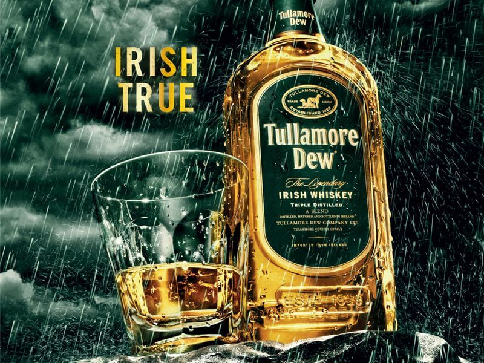

Tullamore Dew
Описание товара
Tullamore Dew называют легендарным ирландским виски. Более того, многие специалисты полагают его лучшим из всех виски Ирландии.
Характеристики
| Характеристики | |
| Величина | Значение |
| Содержимое | Отличается мягкостью вкуса и присутствием в аромате лимонных ноток в сочетании с запахом ореха и прокаленного дерева. |
| Цена | от 40$ |
Подробное описание товара
История
Его название происходит от ирландского «Tulach MhЈr» -«Большой Холм». Город, в котором была основана вискокурня, давшая начало этой марке, также носил название Талламор. «dewk» в названии этого виски являются инициалами Дэниэла Е. Уильямса. Этот человек был управляющим вискокурни в Талламоре и внес большой вклад в ее развитие и процветание. А в 1947 году его внук создал первый купажированный ирландский виски. В 1959 вискокурня в Талламоре, так и не сумевшая оправиться от последствий Сухого закона в США и экономического эмбарго со стороны Великобритании, закрылась. В настоящее время торговой маркой «Tullamore dew» владеет компания «Cantrell & Cochrane».
Особенности вкуса и аромата
Аромат этого напитка десятилетней выдержки состоит из комбинации свежескошенной травы, ананаса и жареного дерева. Вкус напоминает в первую очередь о фруктах, с намеком на изюм и инжир, и оставляет послевкусие абрикоса и изюма.
Другие товары
JamesonBushmills